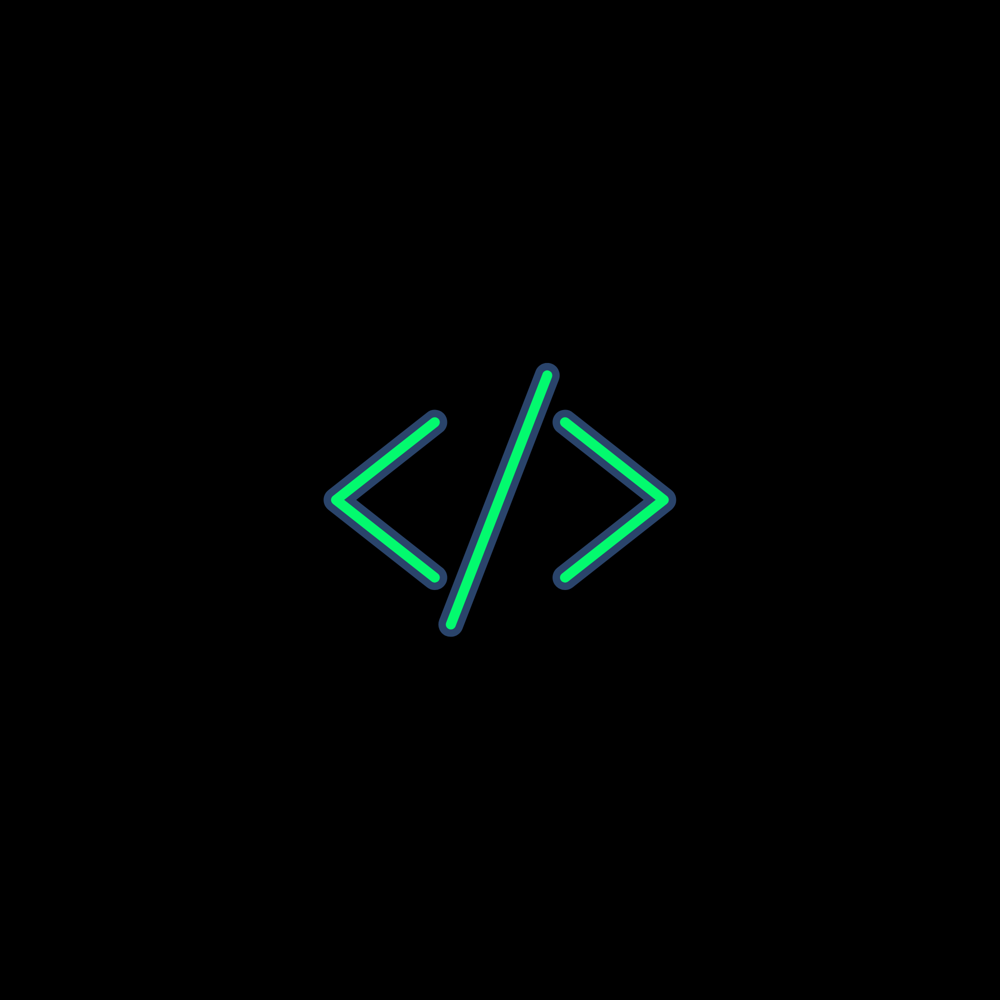

Tecnologia
TI é a sigla para Tecnologia da Informação. Refere-se ao conjunto de hardwares, softwares, redes e serviços utilizados para criar, armazenar, processar, proteger e transmitir dados. Esta área é a base estrutural para a comunicação, inovação e automação de processos em empresas e na sociedade.

Inovação
Inovação é a implementação bem-sucedida de uma nova ideia, produto, serviço ou processo que gera valor real. Não se trata apenas de criatividade ou invenção isolada, mas sim de transformar essa novidade em algo útil, prático e rentável para o mercado ou para a sociedade.
Seção de Tecnologia da Informação
- Alta demanda de empregos — Há muitas oportunidades em diversas áreas de T.I.
- Bons salários — Profissionais qualificados costumam ter remuneração competitiva.
- Trabalho flexível — Muitas vagas permitem trabalho remoto e horários mais flexíveis.